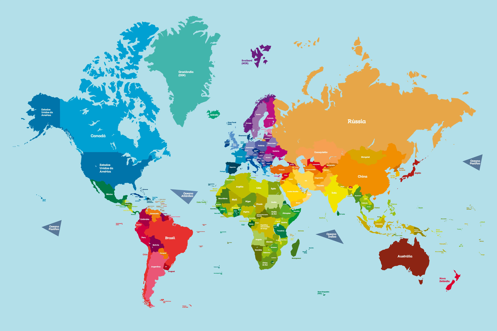

Onde Atuamos
O combate à pobreza é um projeto essencial no Brasil, mas é importante lembrar que a
pobreza é um problema global que precisa ser enfrentado em todas as partes do mundo.
No Brasil, iniciativas como o Programa Bolsa Família e outras políticas sociais têm
mostrado resultados positivos, como a redução significativa da extrema pobreza.
No entanto, a pobreza continua a ser um desafio persistente que afeta milhões de
pessoas em diversos países.

Por Que a Pobreza é um Problema Global
A pobreza é um problema que transcende fronteiras e afeta o mundo de diversas maneiras.
Em um contexto de interconexão econômica, a pobreza em um país pode repercutir em outros,
gerando instabilidade em mercados e cadeias de suprimentos globais. Além disso, a pobreza
extrema impulsiona a migração, levando muitas pessoas a buscar melhores condições de vida
em nações mais desenvolvidas, o que pode criar tensões sociais e econômicas.
Os impactos da pobreza também se manifestam na saúde global. Condições precárias de vida
frequentemente resultam em surtos de doenças que não respeitam fronteiras, ameaçando a
saúde pública em escala mundial. Além disso, a desigualdade econômica gerada pela pobreza
pode fomentar conflitos e instabilidade política, afetando a segurança internacional.
Portanto, combater a pobreza não é apenas uma questão local, mas uma necessidade global.
A erradicação da pobreza deve ser uma prioridade coletiva, envolvendo a colaboração
entre países, organizações e setores da sociedade para garantir um futuro mais justo e
sustentável para todos.
Em um mundo globalizado, a pobreza em um país pode ter repercussões econômicas em outros.
Mercados interconectados significam que a instabilidade econômica em uma região pode
afetar cadeias de suprimentos e mercados globais. A pobreza extrema pode levar ao aumento
da migração e do número de refugiados, à medida que as pessoas buscam melhores
condições de vida em outros países. Isso pode criar tensões sociais e econômicas em
países receptores.
Doenças e problemas de saúde não respeitam fronteiras. A pobreza está
frequentemente associada a condições de saúde precárias, que podem facilitar a
propagação de doenças infecciosas, afetando a saúde global. A desigualdade econômica
pode levar a conflitos e instabilidade política, que têm implicações globais.
A redução da pobreza é essencial para promover a paz e a segurança internacional.
A Importância de um Esforço Global
Combater a pobreza requer um esforço coordenado e global. Organizações internacionais,
governos, ONGs e o setor privado precisam trabalhar juntos para implementar soluções
sustentáveis. A Agenda 2030 da ONU para o Desenvolvimento Sustentável, que inclui o
objetivo de erradicar a pobreza em todas as suas formas, é um exemplo de como a
comunidade internacional pode se unir para enfrentar esse desafio.